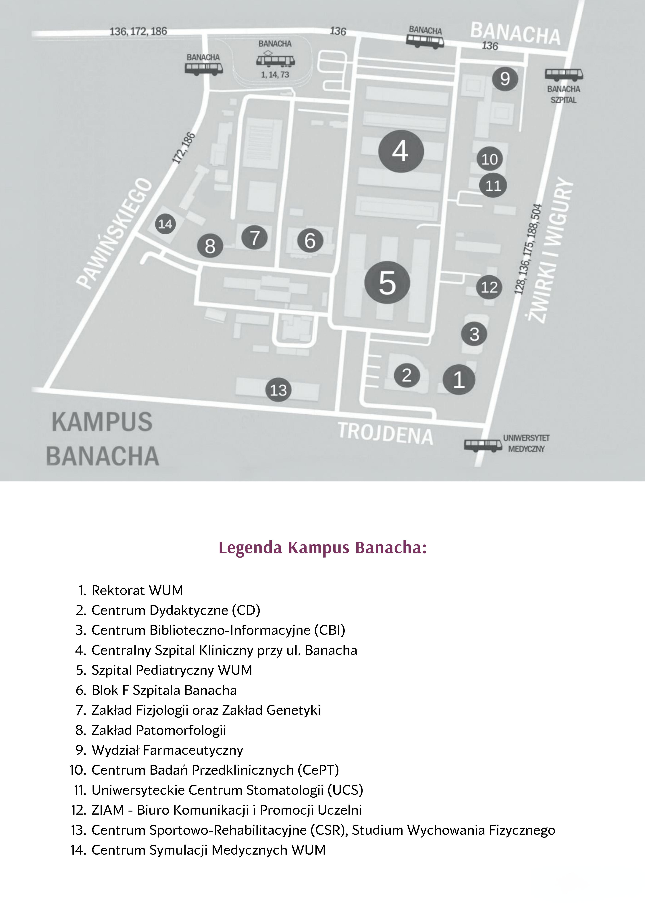

Mapa toalet WUM – Kampusy
Kliknij w pulsujące kółko, aby zobaczyć informację o toalecie.

Szpital Wolska
Bardzo fajne toalety na 1 piętrze w budynku gdzie są sale seminaryjne, mało ludzi.
Fajna toaleta na prawo za szatnią w budynku szpitala
Kampus Lindleya

Kampus Litewska
Dobre, nowoczesne toalety na każdym piętrze, dosyć mało ludzi.